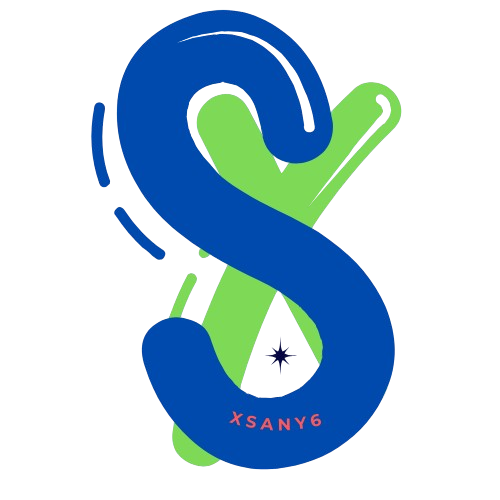

Rizkyan Dwi Fahrizah.
Siswa / Tech Enthusiast
Status: Aktif PKL
Tanggal Lahir:
29 April 2008
Tempat Lahir:
Jawa Timur, Kab. Sidoarjo
Sekolah:
SMKN 2 Buduran
Magang/PKL:
PT. Varia Usaha Beton (IT Support)
Keahlian & Minat
Keahlian Teknis (Skills)
- HTML
- CSS
- JavaScript
- PHP
- Management Server
- Maintenance Web Server
- Maintenance Hardware
- Prompt Engineering AI
- Perakitan Komputer
- Database MySQL
- Konfigurasi Apache/Nginx
- Analisa Sistem
Hobi & Minat
- Membaca Buku Teknologi
- Riset Informasi IT
- Ngoprek Komputer
- Game Strategi
- Menonton Tutorial IT
- Eksperimen Jaringan